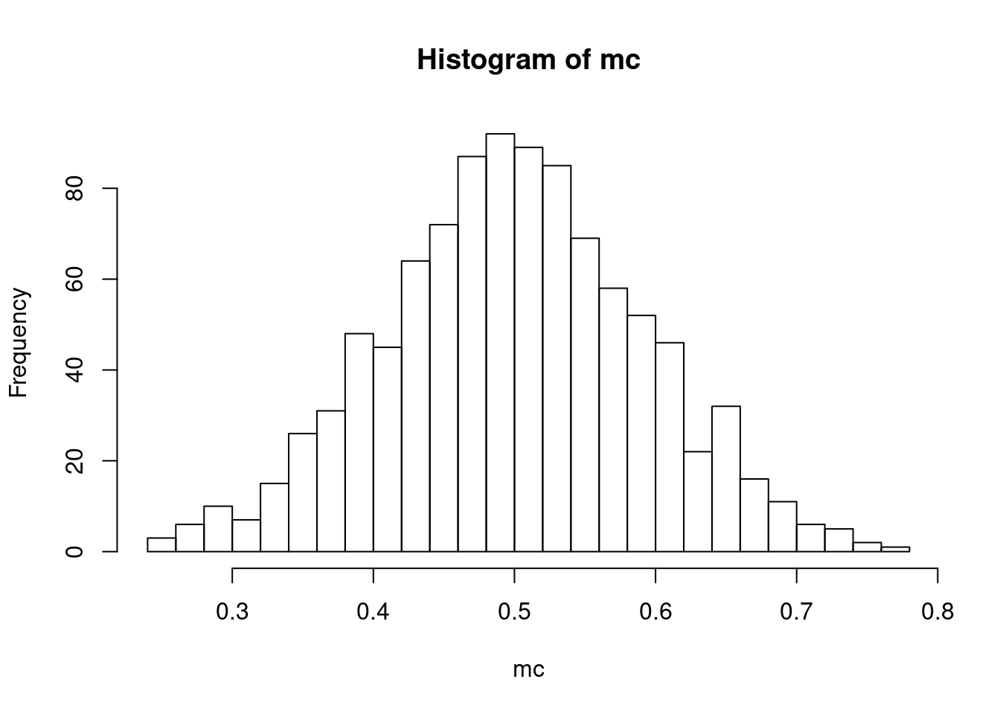
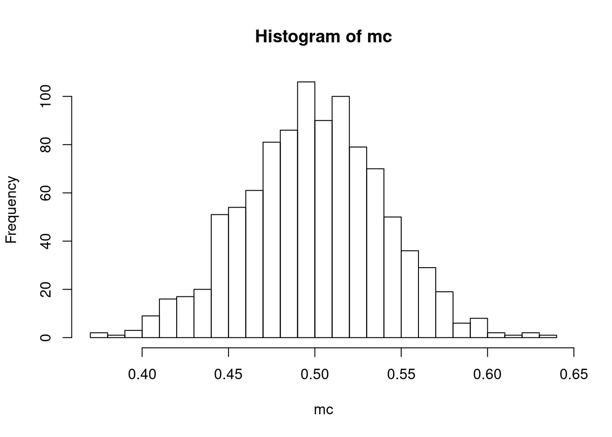
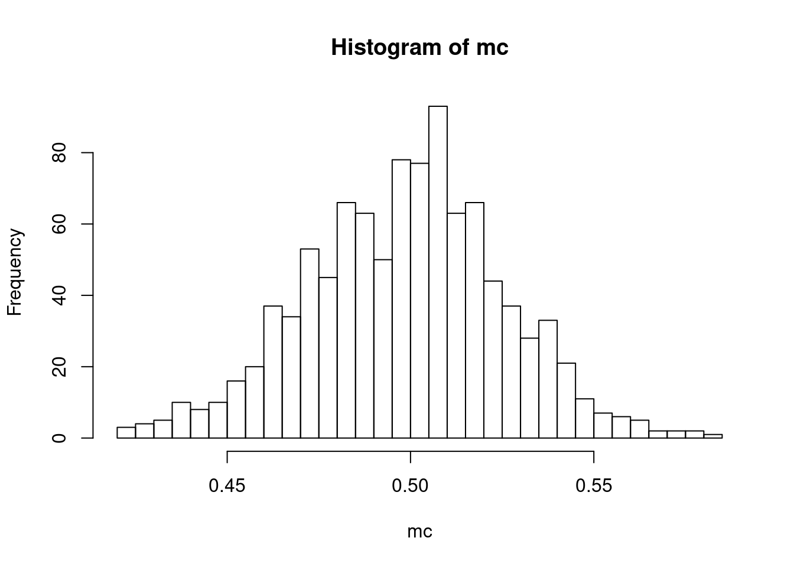

my_mean <- function(x) {
N <- length(x)
sum(x)/N
}Introduction to R and Monte Carlo Simulation
This note has been written as a quarto notebook. You can intersperse your code with comments, and format math. You will find it useful for submitting your assignments!! I very strongly. For more details, you can open (in RStudio) the example notebook on Canvas.
Writing Functions
The formula for the mean of a data series, \(x_1,x_2,...,x_N\) is
\[ \overline{x} = \sum_{i=1}^N\frac{x_i}{N} \]
Now, let’s try writing our own function that takes an array of values and returns the mean.
Notice that the last line is the return value. Since R has it’s own collection of functions, mean included, we often won’t need to write our own functions, but it’s good practice. Let’s create a vector and test our function:
x0 <- c(2,3,2,4,5,2,3,4)
x1 <- rnorm(10) # this generates 10 random numbers from a normal distribution
mean(x0)[1] 3.125my_mean(x0)[1] 3.125mean(x1)[1] 0.03393924my_mean(x1)[1] 0.03393924The function we wrote appears to successfully mimic R’s default mean function.
If you’re new to writing functions, try writing your own for the sample variance:
\[ s^2 = \sum_{i=1}^N\frac{(x_i-\overline{x})^2}{N-1} \]
Simulation
One useful way to use R is to explore the basic theoretical predictions of statistics. For example, recall that if a sequence random variables \(X_{1},...,X_{N}\) is drawn iid with finite variance, then as \(N\) goes to infinity, the central limit theorem gives a formula for the sampling distribution of the sample mean:
\[ \frac{(\overline{X}_{N} - \mu)}{\frac{\sigma}{\sqrt{N}}} \rightarrow_{d} \mathcal{N}(0,1) \]
where \(\mu\) is the population mean of \(X\) and \(\sigma^2\) is the population variance.
Given a distribution for \(X\), we can easily draw a sample of size \(N\). For example, if \(X\) is uniform on the interval \([0,1]\), the function runif will simulate \(N\) draws from this distribution:
sample_X = runif(1000) #<- To check this works, let’s look at this histogram:
hist(sample_X)See? Uniform! We will learn more plotting tricks next week.
Remember, the CLT only tells us about the distribution of the sample mean from a sample of size \(N\), which we can only mimic by repeatedly drawing different samples of size \(N\). Here is a function to do that when X is uniform.
montecarlo_u <- function(N,B) {
sample_mean = matrix(0,B) #<- the realization for each sample of size N will be stored in this vector
for (b in 1:B) {
X = runif(N)
sample_mean[b] = mean(X)
}
sample_mean
}This function will take \(B\) draws of the sample mean from a sample of size \(N\). It uses a for loop, which is a nice way to repeat the same task over and over again. Here we can use is to “simulate” draws from the sampling distribution of the sample mean. The law of large numbers tells us that if we want to know the properties of this sampling distribution, we can learn them arbitrarily well as \(B\rightarrow\infty\). This is known as a “monte-carlo” simulation. In practice, a value of \(B=1000\) (i.e. 200 draws of the sample of size \(N\)) will be enough to see what we want to see.
To see the central limit theorem at work, let’s look at the sampling distribution of the sample mean when \(N=2,5,10,50,100\):
for (N in c(2,5,10,50,100)) {
mc <- montecarlo_u(N,1000)
hist(mc,breaks=30)
}


We can see this distribution of the sample mean getting more and more “bell-shaped” while also getting more tightly distributed around the true mean (0.5 in this case).
Testing a confidence interval
Recall that a confidence interval is designed to “contain” the estimand of interest with a fixed probability. We can test whether a confidence interval has the desired properties using monte-carlo simulation. Taking our previous assumptions on \(X\) as given, the following code constructs a 95% confidence interval for the population mean of \(X\) for each of \(B\) samples of size \(N\). To get the critical value \(z_{0.025}\) we use the function \(qnorm\) which gives the quantiles of the normal.
zcrit = qnorm(0.975)
montecarlo_ci <- function(B,N) {
ci = matrix(0,B,2) #<- we will store the lower bound for the CI in the first column, and the upper bound in the second column
for (b in 1:B) {
X = runif(N)
mX = mean(X) #<- sample mean
sX = sd(X) #<- sample standard deviation
ci[b,1] = mX - zcrit*sX/sqrt(N)
ci[b,2] = mX + zcrit*sX/sqrt(N)
}
ci
}How well does the confidence interval work when \(N=5\)? We can run a monte-carlo simulation with \(B=1000\) to see how often the confidence interval contains the population mean (remenber that \(E[X]=0.5\) if \(X\) is uniform on \([0,1]\).)
ci = montecarlo_ci(1000,5)
coverage = mean(ci[,1]<0.5 & ci[,2]>0.5)
print(coverage)[1] 0.864So we see that the approximation is not working well for this small sample size, and the confidence interval does not contain the mean 95% of the time. Let’s see how it does now as we increase the sample size:
for (N in c(5,10,50,100,1000)) {
ci = montecarlo_ci(1000,N)
coverage = mean(ci[,1]<0.5 & ci[,2]>0.5)
print(paste("For sample size ",N," coverage is ",coverage))
}[1] "For sample size 5 coverage is 0.873"
[1] "For sample size 10 coverage is 0.917"
[1] "For sample size 50 coverage is 0.938"
[1] "For sample size 100 coverage is 0.958"
[1] "For sample size 1000 coverage is 0.954"Exercise
Repeat the exercise above to evaluate a hypothesis test of size 0.05 where the null is \(E[X]=0.5\) against a two-sided alternative, using the CLT to approximate the sampling distribution of the test statistic.